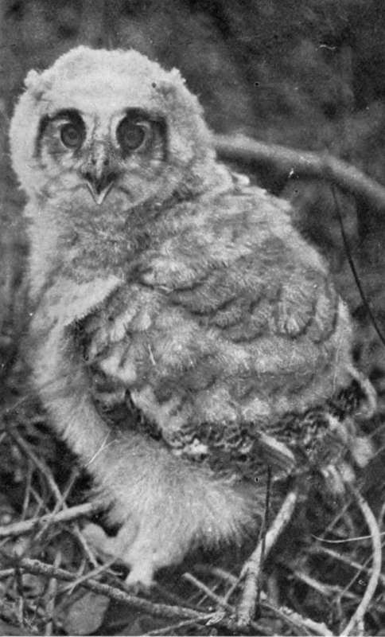
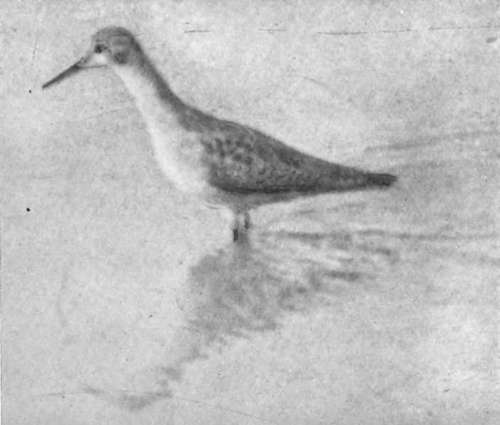

Tents. Part 3
Description
This section is from the book "Wild Life In Canada", by Angus Buchanan. Also available from Amazon: Wild Life in Canada.
Tents. Part 3
Crooked Lake, May 13. Early Nesting Mallard
To-day found a Mallard's nest containing three freshly laid eggs ; the nest being in a cavity almost on the water edge in a low willow-covered bank. This pair had lost no time in mating and nesting, for ice still covered the lake. I marvel at their instinct: the wisdom that brought them hundreds of miles north across a continent, their time of opportune arrival set with the accuracy of calendar date: the wisdom that placed the nest so very close to the water's edge, as if the duck had knowledge that the river soon would fall. Some people might say it was accident, but the more one sees of nature, the more one ponders over that wisdom which is so often designated cunning.
An Osprey's Nest
Back a little way in the forest at the top of the " mast " of a dead spruce tree we came later in view of an Osprey's nest; a look-out over land and water without attempt at hiding. We ran the canoe quietly ashore, and went to investigate, while overhead, slowly circling, swung the great graceful birds that we had disturbed from the nest. Some 60 feet above the ground the dead tree had been broken off, and there rested the great heap of sticks that composed the Osprey's eyrie. I climbed the straight dead limb with difficulty, for it was of fair diameter, but I found, when directly beneath the nest, that it was of such great bulk that I could in no way reach out and above to the interior of the nest on top. I was anxious to secure the eggs, if there were any, and I tried from all sides to gain a firm hold on the nest sticks to draw myself outwards-but all to no avail, and in the end I climbed down to the ground unrewarded, and gave the quest up.
Crooked River, May 14. Black Phase Of The Broad-Winged Hawk
To-day I shot a Broad-winged Hawk which was completely dark brownish black in colour. It was a black phase of this species. Such peculiarities occur, but they are rare, and one is glad to find them, in the same manner that one is glad to see a black fox or a brown-black timber-wolf.
Pike And Pickerel
Pike and Pickerel are plentiful on this river, and we are securing them daily for food. Two Pickerel caught on small minnow to-day weighed l½ and 3¾ lbs. respectively.
Crooked River, May 15.
We meet two Crees
While skinning a hawk this morning, two Crees, travelling upstream, came into view. On sighting our canoe they stopped on their way and came ashore. They were going to Big River; they had some furs, they told us.
We gave them some food.
One was a weather-beaten man well up in years, the other a boy of about 18 summers. The elder man had a fine face, very pleasant to look upon. His eyes were sincere, and had an uncommon, permanent smiling expression- though the whites of the inner corners were bloodshot, as seems to be common to all; many fine wrinkles ran in between the eyes and the nose, as if his eyes had for ever searched over great distances. The nose was well chiselled and strong; the cheek-bones were high; the chin was firm; the forehead broad, and with two deep wrinkles across it. The colour of his skin was shining, deep yellow-tinged brown. The jet-black hair streaked down over the forehead, curled long and not ungracefully around behind the ears, and down across the back of the neck. The moustache and beard were scanty-a growth of a few coarse, untidy hairs. He wore Mackinaw trousers, loosely belted with a broad coloured, Assumption sash, and a black shirt. On his feet were moccasins that fitted like gloves, decorated with interlaced coloured straws on the foreparts. Neither spoke a word of English.
The Spotted Sandpiper is a very common bird on this river. We constantly disturb them as we creep downstream, and they rise before us, piping nervously, in pairs, or in threes or fours, from the river-bank. With flood waters high and covering all sand or pebble spits, they perch always now on dead limbs of fallen trees or uprooted willows which protrude over the bank or lie water-logged in the river. It is remarked that when flying these birds show a prominent mark of white across the centre of the wings, which is invisible when they are in repose.
The Swallows are here !
Tree Swallows are now arriving. The brief spring is already shortening; summer is almost here.
Young Owls
Before the snows are gone the Great Horned Owls build their nests- To-day we found one. It was in a black poplar tree, not yet in leaf, situated about 20 feet back from the river bank. The nest was about 30 feet from the ground on a strong fork among bare limbs. It was not a large nest-small in comparison to the great size of this species-constructed with dead poplar and lichen-covered spruce twigs, and lined with rabbits' hair. In the nest were two three-quarter-grown young, both very downy; the down on the larger one a beautiful buff-cream colour, the other more grey. They might, those weird creatures in the tree, have been elves of a Wrack-ham's pen, with their great round penetrating eyes and taloned fierceness. While I examined the nest, the parents perched in trees quite close to me and hoo-hoo'd continually in alarm and anxiety.
Nestling- G-Beat Horned Owl. (Not yet half full grown) May 17, 1914.
Lesser Yellow-Legs. A fairly common shorebird, loud-voiced like the European Redshank when alarmed.
Finally we left the young to their parents' care, after some trouble to secure a photograph of them.
Beaver River, May 16. The American Goshawk
To-day found nest of this species and established identity beyond doubt by securing the female.
The nest was not very high up in a black poplar tree of a total height of some 40 to 50 feet. On approaching the. tree the female Goshawk swooped down from it, and again and again passed close to my head, shrieking shrilly as she did so. The male bird was, meantime, nowhere to be seen, nor did he put in an appearance that day, or the following day, while we remained in the neighbourhood. The nest was composed of dead twigs and was lined with dry pieces of bark. It contained three very round white soiled eggs 1 11/16 x 2.25 in.-the full complement, as the female when skinned and dissected contained no further embryo egg-body.
Continue to:
- prev: Tents. Part 2
- Table of Contents
- next: Tents. Part 4